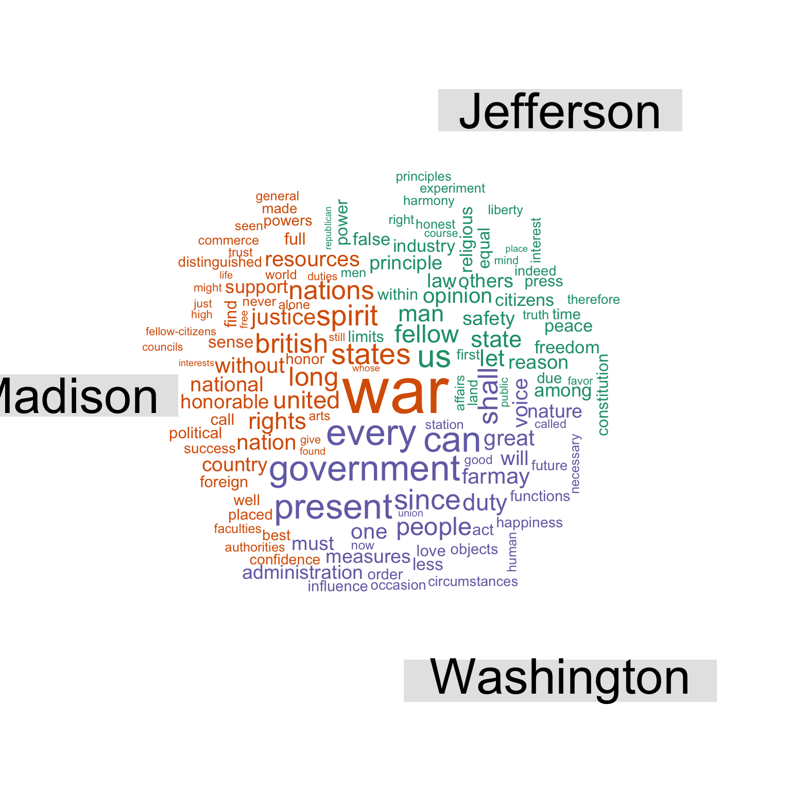
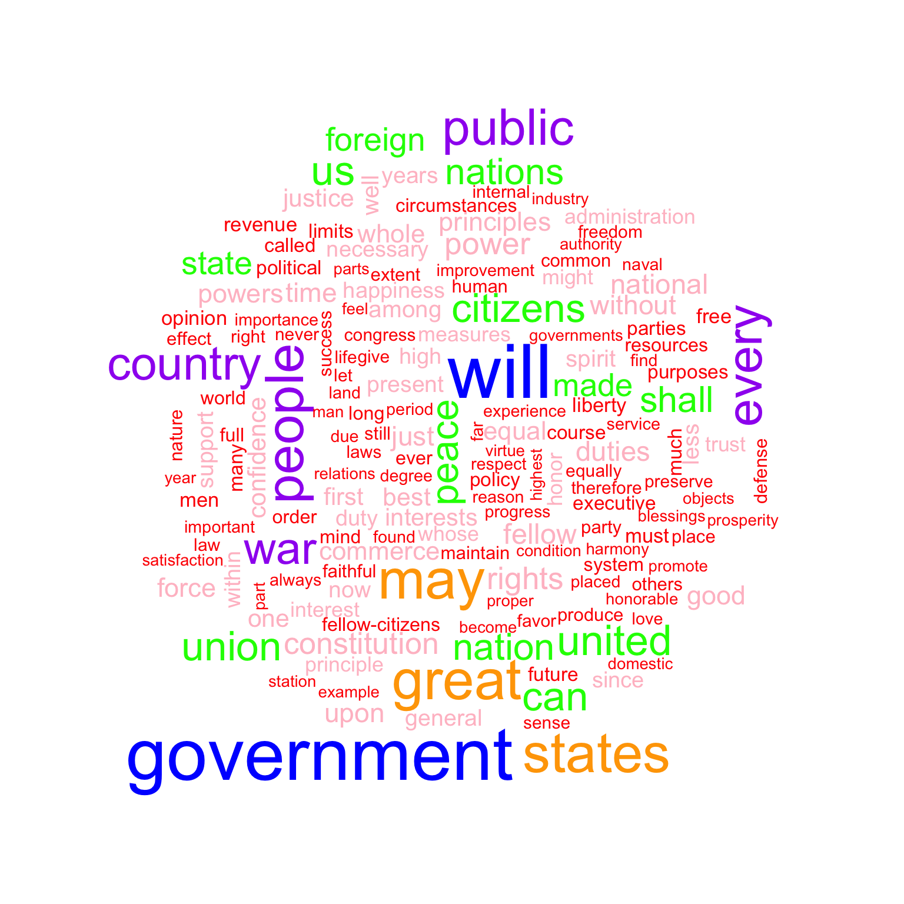

Plotting with quanteda
library(quanteda)At the moment, two quanteda objects, dfm and kwic have custom plot methods: dfm is plotted as a wordcloud, kwic as a lexical dispersion plot. There are also other plots of interest which can be made with the standard R techniques.
1. Wordcloud
Plotting a dfm object will create a wordcloud using the wordcloud pacakge.
# Create a dfm from a somewhat smaller corpus
inaugDfm <- dfm(data_corpus_inaugural[0:10], remove = stopwords('english'), removePunct = TRUE)
# Some words will not fit on a plot this size, so suppress those warings
textplot_wordcloud(dfm_trim(inaugDfm, min_count = 10, verbose = FALSE))You can also plot a “comparison cloud”, but this can only be done with fewer than eight documents:
compDfm <- dfm(corpus_subset(data_corpus_inaugural, President %in% c("Washington", "Jefferson", "Madison")),
groups = "President", remove = stopwords("english"), removePunct = TRUE)
textplot_wordcloud(dfm_trim(compDfm, min_count = 5, verbose = FALSE), comparison = TRUE)
Plot will pass through additional arguments to the underlying call to wordcloud.
textplot_wordcloud(inaugDfm, min.freq = 10,
colors = c('red', 'pink', 'green', 'purple', 'orange', 'blue'))
2. Lexical dispersion plot
Plotting a kwic object produces a lexical dispersion plot which allows us to visualize the occurrences of particular terms throughout the text. We call these “x-ray” plots due to their similarity to the data produced by Amazon’s “x-ray” feature for Kindle books.
textplot_xray(kwic(data_corpus_inaugural[50:57], "american"))
You can also pass multiple kwic objects to plot to compare the dispersion of different terms:
textplot_xray(
kwic(data_corpus_inaugural[50:57], "american"),
kwic(data_corpus_inaugural[50:57], "people"),
kwic(data_corpus_inaugural[50:57], "communist")
)
If you’re only plotting a single document, but with multiple keywords, then the keywords are displayed one below the other rather than side-by-side.
mobydickCorpus <- corpus(data_char_mobydick)
textplot_xray(
kwic(data_char_mobydick, "whale"),
kwic(data_char_mobydick, "ahab")
)
You might also have noticed that the x-axis scale is the absolute token index for single texts and relative token index when multiple texts are being compared. If you prefer, you can specify that you want an absolute scale:
textplot_xray(
kwic(data_corpus_inaugural[50:57], "american"),
kwic(data_corpus_inaugural[50:57], "people"),
kwic(data_corpus_inaugural[50:57], "communist"),
scale = 'absolute'
)
In this case, the texts may not have the same length, so the tokens that don’t exist in a particular text are shaded in grey.
Modifying lexical dispersion plots
The object returned is a ggplot object, which can be modified using ggplot:
library(ggplot2)
theme_set(theme_bw())
g <- textplot_xray(
kwic(data_corpus_inaugural[50:57], "american"),
kwic(data_corpus_inaugural[50:57], "people"),
kwic(data_corpus_inaugural[50:57], "communist")
)
g + aes(color = keyword) + scale_color_manual(values = c('blue', 'red', 'green'))
3. Frequency plots
You can plot the frequency of the top features in a text using topfeatures.
inaugFeatures <- topfeatures(inaugDfm, 100)
# Create a data.frame for ggplot
topDf <- data.frame(
list(
term = names(inaugFeatures),
frequency = unname(inaugFeatures)
)
)
# Sort by reverse frequency order
topDf$term <- with(topDf, reorder(term, -frequency))
ggplot(topDf) + geom_point(aes(x=term, y=frequency)) +
theme(axis.text.x=element_text(angle=90, hjust=1))
If you wanted to compare the frequency of a single term across different texts, you could plot the dfm matrix like this:
americanFreq <- data.frame(list(
document = rownames(inaugDfm[, 'american']),
frequency = unname(as.matrix(inaugDfm[, 'american']))
))
ggplot(americanFreq) + geom_point(aes(x=document,y=frequency)) +
theme(axis.text.x = element_text(angle=90, hjust=1))
The above plots are raw frequency plots. For relative frequency plots, (word count divided by the length of the chapter) we can weight the document-frequency matrix. To obtain expected word frequency per 100 words, we multiply by 100.
relDfm <- weight(inaugDfm, type='relFreq') * 100## Warning: 'weight' is deprecated.
## Use 'dfm_weight' instead.
## See help("Deprecated")head(relDfm)## Document-feature matrix of: 10 documents, 3,240 features (80.6% sparse).
## (showing first 6 documents and first 6 features)
## features
## docs fellow-citizens senate house representatives
## 1789-Washington 0.1510574 0.15105740 0.3021148 0.3021148
## 1793-Washington 0.0000000 0.00000000 0.0000000 0.0000000
## 1797-Adams 0.2798507 0.09328358 0.0000000 0.1865672
## 1801-Jefferson 0.2424242 0.00000000 0.0000000 0.0000000
## 1805-Jefferson 0.0000000 0.00000000 0.0000000 0.0000000
## 1809-Madison 0.1879699 0.00000000 0.0000000 0.0000000
## features
## docs among vicissitudes
## 1789-Washington 0.1510574 0.1510574
## 1793-Washington 0.0000000 0.0000000
## 1797-Adams 0.3731343 0.0000000
## 1801-Jefferson 0.1212121 0.0000000
## 1805-Jefferson 0.6835938 0.0000000
## 1809-Madison 0.0000000 0.0000000relFreq <- data.frame(list(
document = rownames(inaugDfm[, 'american']),
frequency = unname(as.matrix(relDfm[, 'american']))
))
ggplot(relFreq) + geom_point(aes(x=document,y=frequency)) +
theme(axis.text.x = element_text(angle=90, hjust=1))